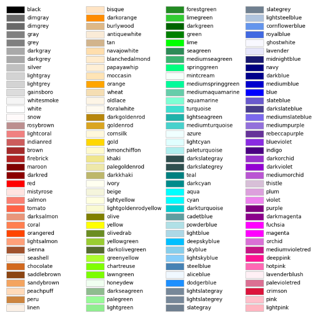

Bar Charts#
The picture is a model of reality.
—Ludwig Wittgenstein
In this lab, you will get familiar with the statistical plotting features of Python using a dataset we have already seen. We will explore the association between two categorical variables and determine if a relationship exists.
Instructions#
Download the
.csvdataset in the Datasets section and place it in theLinux Filesfolder on your ChromeBook’s file system where you save your.pyscripts.Create a Python
.pyscript namedNAME_project_one.pyin yourLinux Filesfolder on your file system. You can do this by opening an IDLE session, creating a new file and then saving it. ReplaceNAMEwith your name.Create a docstring at the very top of the script file. Keep all written answers in this area of the script.
Read the Prerequisites section. (We will do this part in class!)
Read the Background section.
Read the Loading Data section. (We will do this part in class!)
Read the Bar Charts section. Download the script files in that section onto your ChromeBook. Read through them carefully and execute them on your computer.
Read the Set Operations section.
Load in the data from the
.csvfile using the technique outlined in the Loading Data section. (We will do this part in class!)Perform all exercises and answer all questions in the Project section. Label your script with comments as indicated in the Project section.
Keep in mind, there is a section dedicated to Plots underneath the Python on the left-hand menu of the site.
When you are done, zip your script and your csv file into a file named
NAME_project_one.zipUpload the zip file to the Google Classroom Project One Assignment.
Prerequisites#
Note
We will do this in class together.
We installed Python in our first project and got familiar with some of its basic functionality, in particular list variables and the operations that can be performed on them, skills that will be helpful in completing this project.
We also discovered our ChromeBook’s Python installation is a bit different than a typical installation; it’s missing a few essential pieces that we will now install. In order to go further with Python in this class, we need to do the following.
Open up a Linux terminal and type the command,
sudo apt-get install python3-pip
This command will install the Python Package Manager onto your computer. The Python Package Manager, or pip for short, allows us to install Python extensions. And that is exactly what we are going to do. Once the previous command completes, verify the installation with,
pip3 --version
You should see something along the lines of,
pip 22.0.2 from /usr/lib/python3/dist-packages/pip (python 3.10)
Your version may not match exactly. You should be fine as long as your Python version is above 3.7.
Now that pip is installed, let’s plug in the final pieces we need into our Python installation.
matplotlib will be used to generate graphical representations of data. tkinter will be used to render the output of matplotlib into JPEG and PNG images. These packages can be installed through the command line.
Type the following command into your Linux terminal,
pip3 install matplotlib tk

Output:
Defaulting to user installation because normal site-packages is not writeable
- Collecting tk
Downloading tk-0.1.0-py3-none-any.whl (3.9 kB)
…
Installing collected packages: tk
Successfully installed tk-0.1.0

You should see the packages download and install into your system.
That’s it! You are ready to plot some sweet statistical graphs.
Background#
Electric Vehicles in Washington State#
The United States Government General Services Administration maintains a huge database of public available information. One of the datasets they publish is the Battery Electric Vehicles (BEVs) and Plug-in Hybrid Electric Vehicles (PHEVs) that are currently registered through Washington State Department of Licensing
This dataset was taken from data.gov. This is an excellent resource, if you ever find yourself in need of some data. We will be using this online database quite a bit once we get fully up to speed on Python.
We examined the electric vehicle dataset a little bit in class on the first week. We are now prepared to do a little more in-depth analysis.
First, let’s take a look at some of the variables being observed in this dataset.
Make#
The Make variable represents the manufacturer of the car. The possible values for this variable are listed below,
FIAT
MINI
LEXUS
CHRYSLER
LINCOLN
ALFA ROMEO
RIVIAN
TOYOTA
AZURE DYNAMICS
GENESIS
VOLKSWAGEN
JEEP
PORSCHE
MERCEDES-BENZ
CADILLAC
KIA
JAGUAR
POLESTAR
FISKER
FORD
TESLA
SMART
HYUNDAI
BENTLEY
NISSAN
MITSUBISHI
TH!NK
VOLVO
LUCID
CHEVROLET
WHEEGO ELECTRIC CARS
HONDA
LAND ROVER
SUBARU
AUDI
MAZDA
BMW
Clean Alternative Fuel Vehicle (CAFV) Eligibility#
The state of Washington offers many incentives for vehicle owners to invest in an electric vehicle,
In 2019, Washington State reinstated the sales and use tax exemption for the sales of vehicles powered by a clean alternative fuel and certain plug-in hybrids.
However, not all cars are eligible for this tax exemption. The exemption depends on the battery range of the electric vehicle. If your electric vehicle does not have a large enough range, your vehicle is deemed ineligible for a tax exemption.
The Clean Alternative Fuel Vehicle (CAFV) Eligibility variable in this dataset records whether or not an individual car is eligible. The possible values of this variable are:
Not eligible due to low battery range
Eligibility unknown as battery range has not been researched
Clean Alternative Fuel Vehicle Eligible
Electric Vehicle Type#
Electric vehicles come in two varieties: vehicles that are fully electric and hybrid vehicles that revert to a gasoline engine when they run out of electric power. This article from PC Magazine goes into greater detail about the differences between these two types of electric vehicles
The Electric Vehicle Type variable records what type of electric vehicle was registered with Washington State. The possible values of this variable are:
Battery Electric Vehicle (BEV)
Plug-in Hybrid Electric Vehicle (PHEV)
BEV electric vehicles are fully electric. PHEV use hybrid engines; when PHEV engines run out of power, they start using gasoline.
Bar Charts#
Important
Refer to Plots section for a more in-depth look at the various features of matplotlib, the library we are using to create graphs.
No Frills#
Recall a standard bar chart is a way of visually representing the marginal frequency distribution for a sample of categorical data,
Up until now we have been living in the stone age, creating these graphs by hand. Welcome to the twenty-first century. Behold, the power of matplotlib,
(Source code, png, hires.png, pdf)
{kind=link}
{kind=link}
Click on the Source Code button in the top left corner of the graph to download the .py script used to generate this graph. Examine the source code contained therein for generating a Bar Chart with matplotlib. Be sure to read the comments before you execute it, as you will need to tweak a setting to get it to run on your computer.
The key line to pay attention to in this script is the following,
axes.bar(relative_freq.keys(), relative_freq.values(), color="lightblue", ec="red", width=0.5)
The bar() function is matplotlib’s bar chart graphing function.
The first argument of the bar() function is the values of the categorical variable you wish to plot. The second argument is the frequencies of each of the values. The order of each list that is passed in must be the same. For example, if we have a sample of data,
We would graph its frequency distribution using the following code,
import matplotlib.pyplot as plot
(fig, axes) = plot.subplots()
values = [ "A", "B"]
frequencies = [ 5, 7 ]
axes.bar(values, frequencies, color="lightblue", ec="red", width=0.5)
axes.set_xlabel("Categories")
axes.set_ylabel("Frequency")
plot.show()
This code will create a bar chart with two values of a categorical variable on the x axis, A and B. It will plot their respective frequencies, 5 and 7, on the y-axis.
The two arguments, color and ec, affect the styling of the bar chart. color determines the fill color of the bars and ec determines the outline color.
Note
ec stands for “edge color”
The full list of colors available to use in matplotlib is detailed in the following chart,
Any value in this chart can be used an argument for color or ec.
This script is annotated with lots of comments for you to read. Give them a peak, and then let’s meet over in the next section.
Stacked#
Recall a stacked bar chart is a way of visually representing a conditional distribution of one categorical variable with respect to another,
(Source code, png, hires.png, pdf)
{kind=link}
{kind=link}
This one is extremely tricky, so read through it carefully.
Note
We are performing the same calculations in this script that we performed in class on Thursday, September 7 th with the simulated distribution of shapes and colors. You should have your calculations saved in a file named stacked_bar_chart.py in your Linux Files folder on your ChromeBook.
matplotlib does not have a nice way of making stacked bar charts; Unforunately, the twenty-first century isn’t all it’s cracked up to be. In this timeline, you have to “stack” your bar charts yourself. Make sure to download this one and go through it step by step. The script has been well commented; every step has been detailed.
Hint
Your script comments should look like the ones in the scripts you just downloaded.
The key lines to pay attention to in this script are the follwoing,
# Stack Conditional Distribution of Shape Given Red
axs.bar("RED", percent_of_red_that_are_balls, color="yellow", ec="blue", width=0.5, label="BALL")
# add the previous percent to the `bottom` to stack
axs.bar("RED", percent_of_red_that_are_ducks, bottom=percent_of_red_that_are_balls, color="lightgreen", ec="blue", width=0.5, label="DUCK")
# Stack Conditional Distribution of Shape Given Blue
# NOTE: don't label this group, or else you'll get two legends
axs.bar("BLUE", percent_of_blue_that_are_balls, color="yellow", ec="blue", width=0.5)
# add the previous percent to the `bottom` to stack
axs.bar("BLUE", percent_of_blue_that_are_ducks, bottom=percent_of_blue_that_are_balls, color="lightgreen", ec="blue", width=0.5,)
We have to manually stack the bars on top of each category and then add the previous percentage to the bottom of the next bar. Note for RED, we are passing in additional argument of bottom in the second line; this tells matplotlib to start the next bar at that height. Similarly for BLUE.
Set Operations#
A set in Python is defined with a pair of curly brackets { }.
emperors = { "Augustus", "Commodus", "Nero", "Hadrian" }
A set variable in Python is a special type of variable. When you create a set, it won’t distinguish between identical elements. In other words, sets do not allow duplicates. As an example,
set_of_dupes = { "a", "a", "b", "b" }
print(set_of_dupes)
Output:
{‘a’, ‘b’}
Notice the repetitions of a and b are ignored. This property of sets is extremely useful for categorical data.
Suppose you have a list of categorical data such as,
some_list = [ "A", "A", "B", "C", "D", "D", "D" ]
Suppose, further, you didn’t know how many values the categorical variable took on. In this particular case, it’s easy to see what the values are just by looking at the list (i.e. A, B, C and D), but in real world datasets, you could have thousands of individual observations to sort through to determine exactly how many values a categorical variable can assume.
Rather than trying to determine what the distinct values are by hand, let Python do the hard work for you by converting the list into a set,
set(some_list)
Output:
{‘A’, ‘B’, ‘C’, ‘D’}
Project#
No Frills#
Calculate the relative frequency of the following Makes of Electric Vehicles,
TESLA
CHEVROLET
NISSAN
TOYOTA
VOLKSWAGEN
Label your calculations with comments.
Using your answers to #1, construct a bar chart for only these five values of the Make categorical variable. Label the commands used to render the graph with comments.
In the Docstrings at the top of your script, answer the following questions.
Out of these five values, what is the most frequent Make of Electric Vehicle in Washington State?
Find the joint frequency distribution of Make and Electric Vehicle Type for the same Makes as in #1 and #2. In other words, fill out the following table,
Battery Electric Vehicle (BEV) |
Plug-in Hybrid Electric Vehicle (PHEV) |
|
TESLA |
? |
? |
CHEVROLET |
? |
? |
NISSAN |
? |
? |
TOYOTA |
? |
? |
VOLKSWAGEN |
? |
? |
Which manufacturers produce more Battery Electric Vehicles (BEV) than Plug-in Hybrid Eletric Vehicles (PHEV)? In other words, what does the conditional distribution for the Electric Vehicle Type given the Make tell you about the manufacturers of electric vehicles? Which manufacturers are more likely to produce fully electric cars versus hybrid cars and visa versa?
Which manufacturers produce more Battery Electric Vehicles (BEV) than their competitors? Which manufacturers produce more Plug-in Hybrid Electric Vehicles (PHEV) than their competitors? In other words, what does the conditional distribution for the Make given the Electric Vehicle Type tell you about the market for electric cars in Washington state?
Stacked#
Before starting this part of project, answer the following in a Docstrings: Based on the information provided in the Background section, how would you expect the conditional distribution of Clean Alternative Fuel Vehicle (CAFV) Eligibility given the Electric Vehicle Type to look? Do you expect fully electric vehicles to have greater eligibility for tax credits than hybrid vehicles? Why or why not?
Answer the following questions. Label any commands you use to solve the problem with comments. Write your answers in the Docstrings at the top of the script.
What percentage of electric vehicles in Washington State are “Not eligible due to low battery range” for the Clean Alternative Fuel (CAFV) Eligibility tax exemption?
What percentage of electric vehicles in Washington State are Battery Electric Vehicles (BEV)?
What percentage of electric vehicles in Washington State are Plug-in Hybrid Electric Vehicle (PHEV)?
What percentage of electric vehicles in Washington State are both Battery Electric Vehicles (BEV) and “Not eligible due to low battery range” for Clean Alternative Fuel Vehicle (CAFV) Eligibility tax exemption?
What percentage of electric vehicles in Washington State are both Plug-in Hybrid Electric Vehicle (PHEV) and “Not eligible due to low battery range” for Clean Alternative Fuel Vehicle (CAFV) Eligibility tax exemption?
What percentage of Battery Electric Vehicles (BEV) are “Not eligible due to low battery range” for Clean Alternative Fuel Vehicle (CAFV) Eligibility tax exemption?
What percentage of Plug-in Hybrid Electric Vehicle (PHEV) are “Not eligible due to low battery range” for Clean Alternative Fuel Vehicle (CAFV) Eligibility tax exemption?
What percentage of “Not eligible due to low battery range” for Clean Alternative Fuel Vehicle (CAFV) Eligibility vehicles are Battery Electric Vehicles (BEV)?
What percentage of “Not eligible due to low battery range” for Clean Alternative Fuel Vehicle (CAFV) Eligibility vehicles are Plug-in Hybrid Electric Vehicle (PHEV)?
Using this information obtained in #3 and any additional information required, create a stacked bar chart for the conditional distribution of the Electric Vehicle Type given the Clean Alternative Fuel Vehicle (CAFV) Eligibility.
What does your stacked bar chart from #3 tell you about the association between the Clean Alternative Fuel Vehicle (CAFV) Eligibility and the Electric Vehicle Type? Write your answer in your script’s Docstrings and label the problem.
Write a few sentences explaining the results from #2 - #4. Did the result turn out the way you expected? Why or why not?
Based on your answer to #4 in this section and #4 from the previous section, which manufacturers in Washington state benefit the most from the tax exemption? What does this tell you about the manufacturer with the most electric vehicles registered in Washington state?
Datasets#
Loading Data#
The following code snippet will load in a CSV spreadsheet named example.csv, parse it into a list and then print it to screen, assuming that CSV file is saved in the same folder as your script. Modify this code snippet to fit the datasets in this lab and then use it to load in the provided datasets in Datasets section.
import csv
# read in data
with open('example.csv') as csv_file:
csv_reader = csv.reader(csv_file)
raw_data = [ row for row in csv_reader ]
# separate headers from data
headers = raw_data[0]
columns = raw_data[1:]
# grab first column from csv file
column_1 = [ row[0] for row in columns ]
print(column_1)
Note
We will do this part in class together.
Electric Vehicle Dataset#
You can download the full dataset here.
The following table is the a preview of the data you will be using for this project.
VIN (1-10) |
County |
City |
State |
Postal Code |
Model Year |
Make |
Model |
Electric Vehicle Type |
Clean Alternative Fuel Vehicle (CAFV) Eligibility |
Electric Range |
Base MSRP |
Legislative District |
DOL Vehicle ID |
Vehicle Location |
Electric Utility |
2020 Census Tract |
5UXTA6C03P |
King |
Seattle |
WA |
98177 |
2023 |
BMW |
X5 |
Plug-in Hybrid Electric Vehicle (PHEV) |
Clean Alternative Fuel Vehicle Eligible |
30 |
0 |
36 |
218985539 |
POINT (-122.38242499999996 47.77279000000004) |
CITY OF SEATTLE - (WA)|CITY OF TACOMA - (WA) |
53033001600 |
1FMCU0EZXN |
Yakima |
Moxee |
WA |
98936 |
2022 |
FORD |
ESCAPE |
Plug-in Hybrid Electric Vehicle (PHEV) |
Clean Alternative Fuel Vehicle Eligible |
38 |
0 |
15 |
197264322 |
POINT (-120.37951169999997 46.55609000000004) |
PACIFICORP |
53077001702 |
1G1FW6S03J |
King |
Seattle |
WA |
98117 |
2018 |
CHEVROLET |
BOLT EV |
Battery Electric Vehicle (BEV) |
Clean Alternative Fuel Vehicle Eligible |
238 |
0 |
36 |
168549727 |
POINT (-122.37275999999997 47.689685000000054) |
CITY OF SEATTLE - (WA)|CITY OF TACOMA - (WA) |
53033003000 |
The meaning of the columns was discussed in more detail in Background. Refer to that section for further information on this dataset.